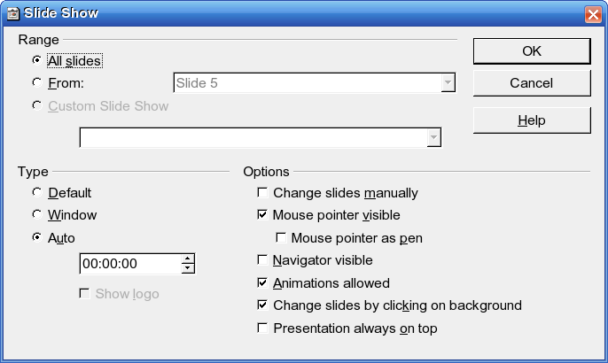

Opcije vezane za podešavanje prezentacije dobijete preko trake sa padajućim menijima
Slide Show / Slide Show Settings.

- Segment Range
- opseg.
- All slides
- prikaži sve slajdove.
- From
- prikaži slajdove počev od slajda koji odaberete u padajućoj listi.
- Custom Slide Show
- iz padajuće liste odabirate prilagođen prikaz prezentacije.
- Segment Type
- tip prezentacije.
- Default
- prikaz preko celog ekrana.
- Window
- prikaz u prozoru Impress-a.
- Auto
- prezentacija se vrti u krug a nakon poslednjeg slajda se pravi pauza koja se zadaje na brojaču. Opcija Show logo prikazuje logo OpenOffice.org-a za vreme trajanja pauze.
- Segment Option
- opcije.
- Change slides manualy
- ručno menjanje slajdova. Klikom ili pritiskom na tastere Space — napred, Backspace — nazad.
- Mouse pointer visible
- uključuje ili isključuje pokazivač miša tokom prezentacije.
- Mouse pointer as pen
- pokazivač miša menja oblik u olovku kojom možete “pisati” tokom prikaza prezentacije.
- Navigator visible
- prozor navigatora se vidi tokom prezentacije.
- Animations allowed
- uključuje ili isključuje animacije koje ste definisali na slajdovima.
- Change slides by clicking background
- dozvoljeno je menjanje slajdova klikom na pozadinu slajda.
- Presentation always on top
- prezentacija će biti na vrhu svih aktivnih prozora.